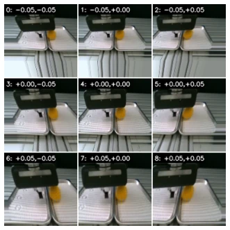
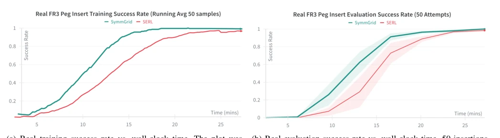
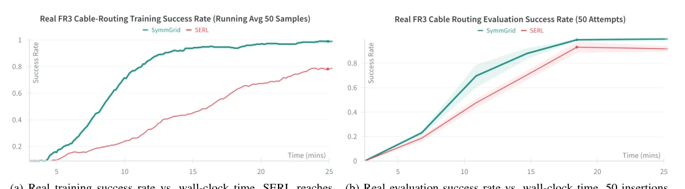
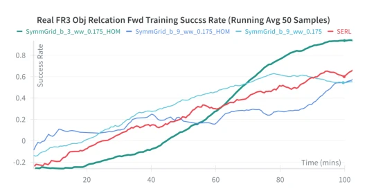

This paper attempts to add "symmetry" to robot learning, but the result is like playing Tetris. The core of SymmGrid is turning trajectories into grids, "super-scaling" data through parallel transformations. It sounds great, after all physical laws are indeed symmetric, but in real machines, especially under exocentric perspective (exocentric), artifacts (artifacts) from perspective transformations are no joke. Although they boast a 2x training speed improvement, looking closely at ablation studies, exocentric tasks (exocentric) actually require shrinking grids to avoid "hallucinations". This is like adding a fan to a treadmill, the wind makes it fast, but running off course is dangerous. However, compressing real-machine training to the 10-minute level is indeed quite appealing for robot researchers who hate waiting, this "super-scaling" is truly beneficial. It proves simple branch symmetry can bring super-proportional gains under specific conditions, but also exposes the boundaries of visual geometric transformations.
Performing deep reinforcement learning (on-robot learning) directly on physical robots has always been a pain point, because training is too slow, often taking tens of minutes or even hours, and prone to falling into the sim2real (sim2real) pit. Although existing work uses symmetry to accelerate, such as ITER [2] using reflection symmetry, or EquiRL [4][7] embedding symmetry into networks, the number of symmetry transformations they extract is limited, data generation efficiency is constrained. SymmGrid aims to solve this bottleneck, using "branched symmetries" (branched symmetries) to super-scale (super-scale) data generation, rather than relying on just a few transformations. Authors hope to break the "training time" (training time) curse, letting robots learn contact tasks like peg insertion, wiring, etc., in shorter time, thus closer to practical deployment. Compared to baselines like SERL [13], SymmGrid attempts to achieve efficiency leap through geometric transformations at the data generation stage.
The overall framework models the Markov Decision Process (MDP) as a tree structure, trajectories as edges, states as vertices. Core innovation lies in "branched symmetries" (branched symmetries), generating a KxK geometric grid in state space through Affine transformation (Affine transformation). For each timestep, generate a large number of symmetric equivalent state-action pairs. Data flow processing is divided into two parts: 1. Egocentric processing (Egocentric): camera moves with the robotic arm, scene relatively invariant. Use a pointer-based system (pointer-based system) in replay buffer to avoid copying identical images, saving memory. 2. Exocentric processing (Exocentric): fixed camera cannot follow transformation, need to use Homography (Homography) to warp images. Paper proposes computing homography at sample-side, recording index, avoiding storing large amounts of warped images. 3. Parallel computation: all grid transformations computed in parallel, using SymWS (SymWS) to constrain transformation range, ensuring within robot workspace. This design allows greatly expanding Replay Buffer diversity while maintaining physical consistency, especially for small position changes in contact tasks.

Fig. 5: Visualization of homography shifts in relation to end- effector relative frame. Shifts are displayed atop of each figure in meters with the central figure being the original image. Notice the artifact formation in certain scenes.
Conducted three contact tasks on Franka robot: peg-insertion (peg-insertion), cable-routing (cable-routing), and object-relocation (object-relocation). Baseline is SERL [13]. Metrics include convergence time, success rate, and trajectory-level nAUC. Results: Peg-insertion task training speed up 1.41x, wiring 2.17x. In exocentric tasks (object-relocation), large grids instead introduce artifacts, need to reduce branch count (3 branches) and spatial width (0.175m) to obtain best effect. Findings: Symmetry super-scaling is indeed effective, but homography under exocentric will introduce parallax and interpolation artifacts, affecting data diversity. In object-relocation task, SymmGrid success rate reached 99.3% at 10k steps, far exceeding SERL [13]'s 74.7%, proving its potential in complex contact tasks, but also warning of exocentric transformation limitations.

Fig. 3: SymmGrid vs. SERL peg-insertion results for on-robot learning. Trained across five seeds using a constant grid size of K = 27. The envelope depicts the standard error of the mean.

Fig. 4: SymmGrid vs. SERL cable-routing results for on-robot learning. Trained across five seeds using a constant grid size of K = 27. The envelope depicts the standard error of the mean.

Fig. 6: Object Relocation Forward Training Results: 3 SymmGrid ablations presented relative to SERL using the more narrow workspace width of 0.175 m across 3 seeds.